Is H3's encoder the bottleneck?
Manifest §25 (m00992, m00993, m00994). Version 5 (10:15 AM ET): adds the posterior-prior run, the FLUX.2 mix, the 400-step ceiling and the full FLUX.2 objective. A longer video fine-tune (ft4) and the remaining 40 images are still running. Every image is the original lossless PNG at full resolution; zooms are cut from those files in the browser. All results live in Bluejay (h3_enc_samples, h3_enc_runs, h3_enc_results; Sparrow view view_h3_encoder).
Finding 1: H3 expects tiled-encoded latents.
The project encodes untiled (3× faster). That gives latents whose spread in channels 16–23 is only about 0.7 of what H3's own normalization expects, in the 300 stored training latents as in fresh re-encodes. The spread depends on the size of the picture the encoder sees: 128-px tiles give 1.39, the VAE's default 256-px tiles 0.96, 384-px tiles 0.76, the whole 512² frame 0.67. Only the default tiles match H3. Stock H3 agrees: its flow-matching loss on the same 30 clips is lower for tiled latents at every noise level, on 29–30 of 30 clips, about 10% lower on average. So H3 was trained on latents like the tiled ones, and every adapter of this project so far was trained on latents slightly off H3's distribution. The tiled encode also decodes better (on 18 held-out clips LPIPS 0.055 → 0.046, DISTS 0.056 → 0.047).
| encode recipe | latents | n | std, channels 0–15 | std, channels 16–23 |
|---|---|---|---|---|
| tiled posterior sample | 30 train clips (h3_pexels_clips.clip_512) | 30 | 0.966 | 0.978 |
| tiled 128 32 posterior sample | first 10 of those clips | 10 | 1.028 | 1.394 |
| tiled 384 96 posterior sample | first 10 of those clips | 10 | 0.916 | 0.764 |
| tiled 256 / 64 posterior sample | first 10 of those clips | 10 | 0.952 | 0.960 |
| untiled posterior sample | 30 train clips (h3_pexels_clips.clip_512) | 30 | 0.909 | 0.687 |
| untiled posterior sample | first 10 of those clips | 10 | 0.892 | 0.669 |
| untiled posterior sample (h3.encode), as trained on | h3_magick_images.h3_latent_512 | 300 | 0.762 | 0.484 |
| untiled posterior sample (h3.encode), as trained on | h3_pexels_clips.h3_latent_video | 300 | 0.936 | 0.700 |
| noise σ | untiled | tiled | change | clips where tiled is lower |
|---|---|---|---|---|
| 0.10 | 0.4191 | 0.4055 | -3.3% | 29 / 30 |
| 0.30 | 0.2177 | 0.2026 | -6.9% | 30 / 30 |
| 0.50 | 0.1585 | 0.1411 | -10.9% | 30 / 30 |
| 0.60 | 0.1445 | 0.1261 | -12.8% | 30 / 30 |
| 0.75 | 0.1448 | 0.1225 | -15.4% | 30 / 30 |
| 0.90 | 0.2632 | 0.2129 | -19.1% | 29 / 30 |
Finding 2 (the question asked): is the encoder the bottleneck? By the numbers yes, by eye only partly. Latents exist that the frozen decoder turns into clearly better reconstructions on every reference metric: +4.1 dB PSNR on images and +2.5 dB on 5 whole clips, DISTS down by 60%. They stay as close to the encoder's latent as the pipeline's own sampling noise. A perceptual objective (LPIPS-vgg) makes decodes measurably sharper than the encoder's (gradient energy 0.96 → 0.98 of the source, DISTS 0.061 → 0.019), and a blind judge prefers both optimized versions in about two thirds of zoomed crops. What improves is color, contrast, edges and texture, not fine detail that was lost: hair strands, frets and rooftops stay soft, and on fast clips every decode keeps less frame-to-frame detail than the source. That part is the decoder's limit. A trained encoder (decoder frozen) captures only a part: the best one gains +1.0 dB on 20 held-out clips (+0.5 dB over H3's own tiled encode) and +2.6 dB on images, better on all six metrics for 18 of 20 clips, but a blind judge does not see it. Pixel-perfect video is not in reach with this decoder.
- 12 held-out images (8 Pexels frames, 4 MAGICK on gray, 512²), latent optimized with L1 + 0.1·LPIPS-vgg for 100 Adam steps: PSNR 31.12 → 35.22 dB (every image gains, +2.0 to +6.1 dB); held-out judges (no objective used them): DISTS 0.061 → 0.024, FLUX.2 latent MSE 0.329 → 0.205, LPIPS-alex 0.055 → 0.040; all 12 better on all six of PSNR, SSIM, LPIPS-alex, DISTS, FLUX.2 MSE, CIEDE2000.
- Inside the encoder's own spread: with a prior that keeps the latent near the posterior (mean |z − mode| 0.032, i.e. 1.2 posterior standard deviations, about the size of the pipeline's own sampling noise), the same 12 images still gain +2.6 dB (31.12 → 33.71), DISTS 0.061 → 0.031, and all 12 improve on all six metrics. The encoder could have sampled these latents.
- Ceiling: on the 4 hardest photos, 4× the steps at 3× the learning rate (400 steps, lr 0.03) gives 33.20 dB vs 32.78 dB after 100 steps (encoder 28.66): the decoder's best is about +4.5 dB, and the aerial city photo stops at 25.2 dB. So 100 steps are close to the limit, and the limit is the decoder's.
- 5 whole 141-frame clips, 60 Adam steps through all 8 decoder chunks: PSNR 31.02 → 33.50 dB (+1.6 to +3.0 each), LPIPS-alex 0.068 → 0.048, DISTS 0.056 → 0.026; all 5 better on all six metrics. Flicker: unchanged or lower on the 3 calm clips (0.142 → 0.142, 0.58 → 0.50, 0.31 → 0.28), higher on the 2 fast ones (park 1.90 → 2.45, cliffs 1.48 → 2.28): the per-frame objective does not watch motion; a run with a temporal term is running.
- Objective matters. Plain L2: +5.1 dB PSNR, but DISTS worse than the encoder (0.068 vs 0.061): blur. LPIPS-vgg alone: +1.0 dB PSNR, DISTS 0.061 → 0.019, LPIPS-alex 0.055 → 0.040, sharpness 0.957 → 0.982 (gradient) and 0.870 → 0.911 (high frequencies): the sharpest. FIBO2's FLUX.2-latent distance alone (12 images): FLUX MSE 0.329 → 0.143, DISTS 0.061 → 0.044, sharpness 0.957 → 0.985, PSNR unchanged (31.11); added to L1 + LPIPS (l1_vgg_flux) it changes nothing (35.21 dB, DISTS 0.024).
- Blind A/B, position-balanced (each zoomed crop shown twice, sides swapped; fresh Sonnet judge; the judges favor the right-hand panel 60–77% of the time, which this design cancels): L1 + LPIPS latent preferred in 31 of 48 (11 crops both ways vs 4 for the encoder), LPIPS latent in 32 of 48 (9 vs 1), the fine-tuned encoder ft2 in only 21 of 48 on Pexels photos (2 vs 5). My own look agrees: truer skin and object colors, crisper frets and lugs, no chroma halos on graphics; hair and rooftops about as soft.
- Pure PSNR is the wrong objective: plain L2 reaches +5.1 dB but makes DISTS worse than the encoder (0.068 vs 0.061): blur. L1 + LPIPS improves every metric.
- The optimized latents move by RMS 0.077 (images) and 0.063 (clips) from the posterior mode; the pipeline's own posterior sample moves by 0.060 / 0.039. Per-channel means shift by 0.017 on average and per-channel spreads stay within 0.985–1.043 of the encoder's.
- A free win: a tiled encode with H3's own encoder already improves clips (LPIPS 0.055 → 0.046, DISTS 0.056 → 0.047, flicker 0.43 → 0.42, +0.45 dB); the project encodes untiled for speed.
- Fine-tuned encoders (H3's encoder + quant_conv, 180 M parameters, retrained with the decoder frozen; L1 + 0.1·LPIPS-vgg plus a penalty on (z − zH3)²). Tiled or untiled? All were trained on 256² crops, so every training input was exactly one 256-px tile (the tiled regime), with the penalty computed on the same crops; they are scored on full 512² frames both untiled and tiled. ft1 (1,000 steps, images + video, penalty 1.0), tiled: images 32.53 → 34.86 dB, clips 33.91 → 34.73 dB; untiled only +1.9 / +0.3 dB. ft2 (1,500 steps, 5× the learning rate, penalty 0.1), tiled: images +2.6 dB (47 of 49 better on all six), clips +0.8 dB. ft3 (700 steps, video windows only), tiled: 20 clips 33.64 → 34.64 dB, LPIPS 0.057 → 0.045, DISTS 0.056 → 0.042, 18 of 20 better on all six; against H3's own tiled encode (34.12 dB) that is +0.5 dB. Every fine-tune lowers the frame-to-frame detail a little more (flicker score 0.47 → 0.66) and the high-frequency energy (0.88 → 0.85).
- Fast clips: a loss on frame-to-frame differences (l1_vgg_t) did not help: park clip temporal change source 12.9, encoder 11.1, optimized 10.5 (L1 + LPIPS) and 10.5 (with the temporal term). The decoder cannot produce that temporal texture (grain, fast fine motion) from any latent we found.
The question (m00992): does a latent exist that the frozen H3 decoder turns into a clearly better picture than the encoder's own latent? We find one by gradient descent on the latent itself, against the source pixels, with several objectives, and judge the result with metrics the optimizer did not see and by eye on zoomed details. If such latents are much better, the encoder (not the decoder) limits H3's reconstructions, and a better encoder could be trained with the decoder frozen.
Image examples: source, H3's encoder, optimized latents (full resolution) and detail zooms
Each block: the source, the decode of the encoder's latent as the pipeline makes it (a posterior sample), the posterior mode, then the decode of each optimized latent (one per objective) and of each fine-tuned encoder. Below: the two most detailed 96×96 windows of the source, 3× in every panel.
magick_test_000_0_512 (512×512, magick)


PSNR 31.27 dB, LPIPS 0.0180, DISTS 0.0526

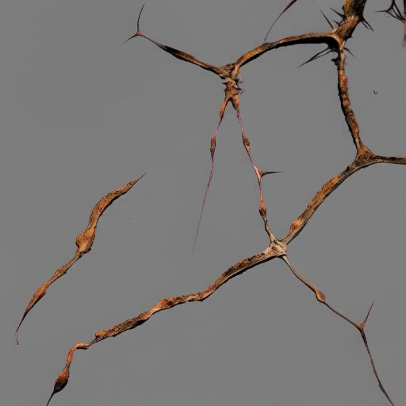
PSNR 31.16 dB, LPIPS 0.0175, DISTS 0.0535

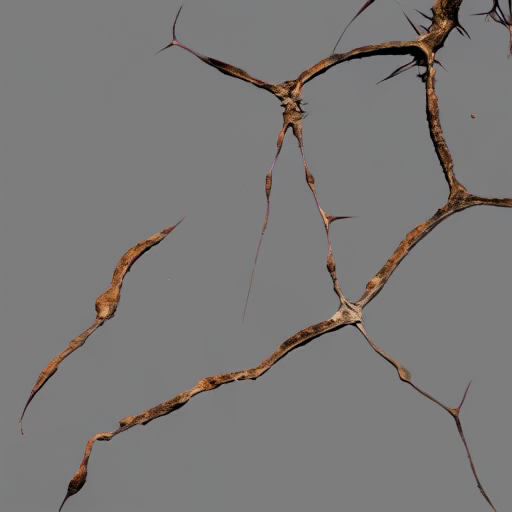
PSNR 31.64 dB, LPIPS 0.0134, DISTS 0.0339

PSNR 35.10 dB, LPIPS 0.0163, DISTS 0.0892

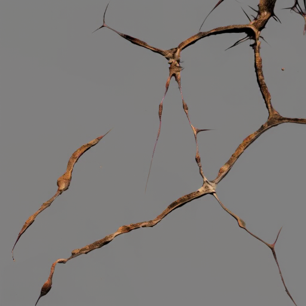
PSNR 34.58 dB, LPIPS 0.0102, DISTS 0.0234

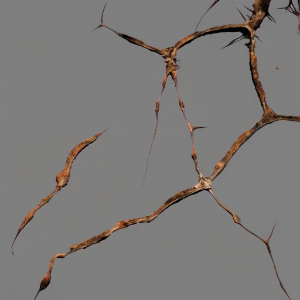
PSNR 33.64 dB, LPIPS 0.0103, DISTS 0.0272

PSNR 34.55 dB, LPIPS 0.0095, DISTS 0.0235

PSNR 35.86 dB, LPIPS 0.0158, DISTS 0.1048

PSNR 32.38 dB, LPIPS 0.0105, DISTS 0.0150

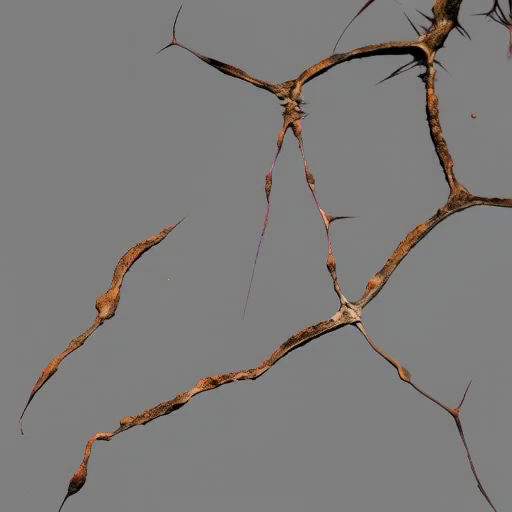
PSNR 32.23 dB, LPIPS 0.0155, DISTS 0.0517

PSNR 32.23 dB, LPIPS 0.0147, DISTS 0.0510

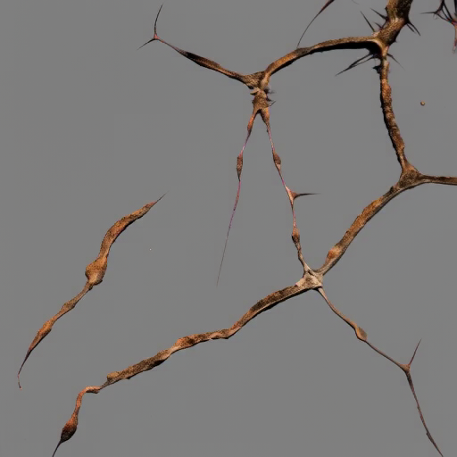
PSNR 32.74 dB, LPIPS 0.0152, DISTS 0.0538

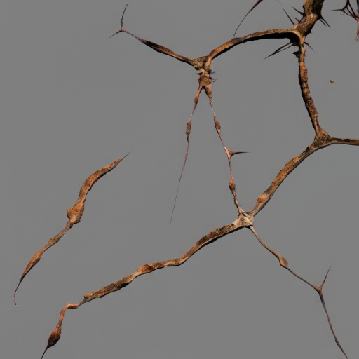
PSNR 32.75 dB, LPIPS 0.0147, DISTS 0.0467
Zoom: the 96×96 window at x=367, y=0 (the most fine detail in the source), 3× nearest neighbor.
Zoom: the 96×96 window at x=290, y=261 (the most fine detail in the source), 3× nearest neighbor.
magick_test_000_1_512 (512×512, magick)


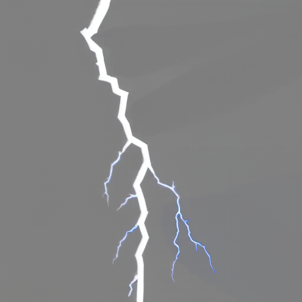
PSNR 38.61 dB, LPIPS 0.0092, DISTS 0.0518

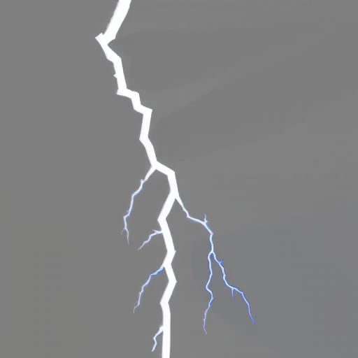
PSNR 37.88 dB, LPIPS 0.0094, DISTS 0.0517

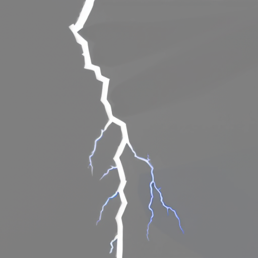
PSNR 37.72 dB, LPIPS 0.0077, DISTS 0.0335

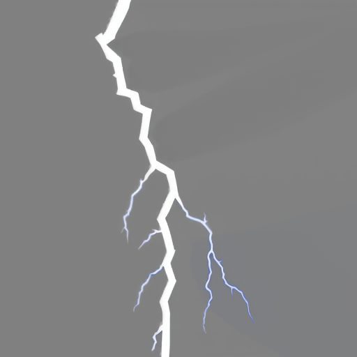
PSNR 42.00 dB, LPIPS 0.0047, DISTS 0.0324

PSNR 42.04 dB, LPIPS 0.0033, DISTS 0.0142

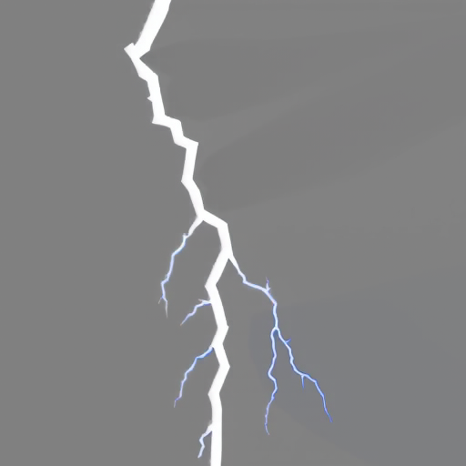
PSNR 41.53 dB, LPIPS 0.0038, DISTS 0.0203

PSNR 42.08 dB, LPIPS 0.0031, DISTS 0.0140

PSNR 43.03 dB, LPIPS 0.0027, DISTS 0.0251

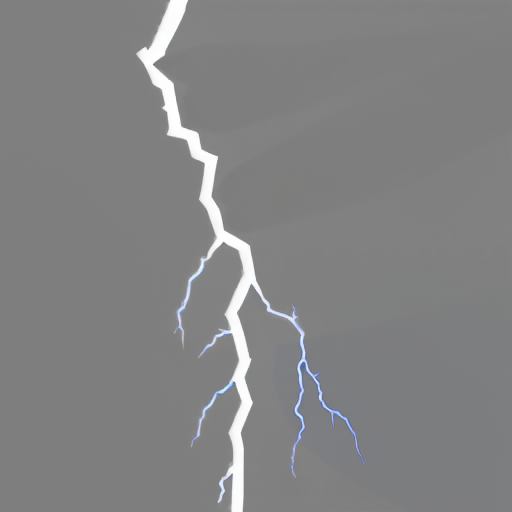
PSNR 39.36 dB, LPIPS 0.0051, DISTS 0.0143

PSNR 38.47 dB, LPIPS 0.0097, DISTS 0.0461

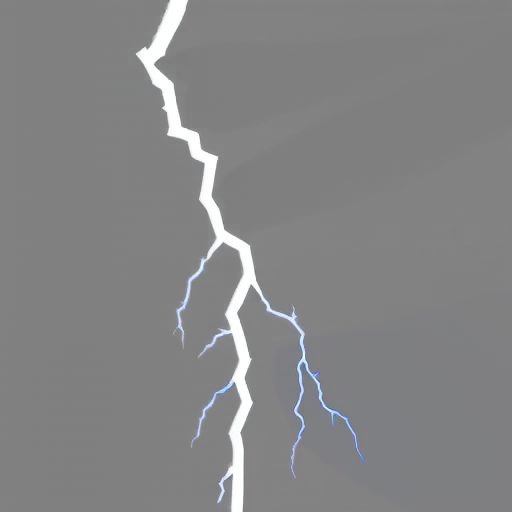
PSNR 39.66 dB, LPIPS 0.0070, DISTS 0.0365

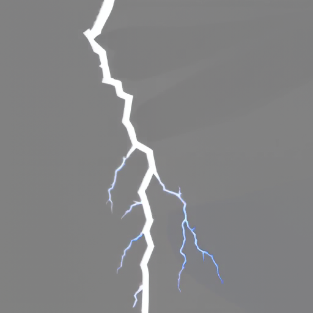
PSNR 38.63 dB, LPIPS 0.0092, DISTS 0.0425

PSNR 39.65 dB, LPIPS 0.0071, DISTS 0.0340
Zoom: the 96×96 window at x=226, y=310 (the most fine detail in the source), 3× nearest neighbor.
Zoom: the 96×96 window at x=177, y=213 (the most fine detail in the source), 3× nearest neighbor.
magick_test_000_2_512 (512×512, magick)

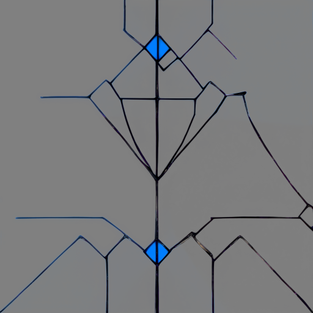

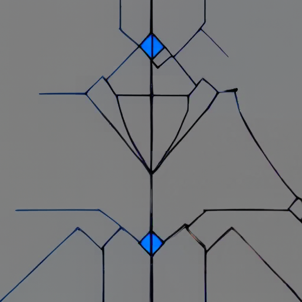
PSNR 34.50 dB, LPIPS 0.0133, DISTS 0.0352

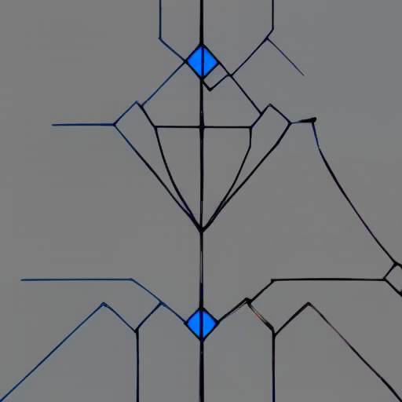
PSNR 33.11 dB, LPIPS 0.0140, DISTS 0.0353

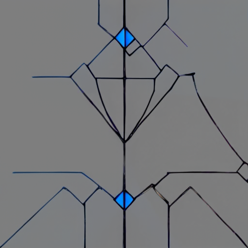
PSNR 35.04 dB, LPIPS 0.0094, DISTS 0.0229

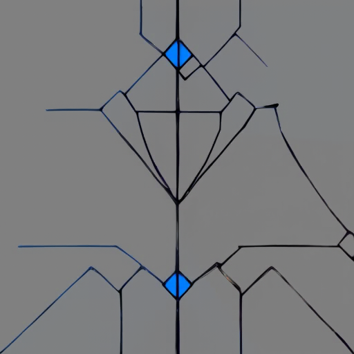
PSNR 39.08 dB, LPIPS 0.0064, DISTS 0.0225

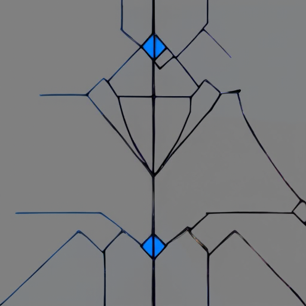
PSNR 39.07 dB, LPIPS 0.0050, DISTS 0.0108

PSNR 38.36 dB, LPIPS 0.0058, DISTS 0.0139

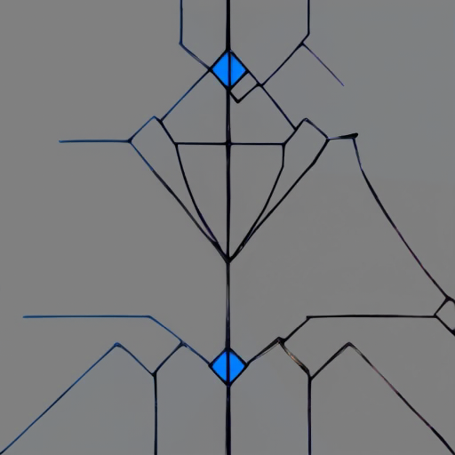
PSNR 39.09 dB, LPIPS 0.0047, DISTS 0.0108

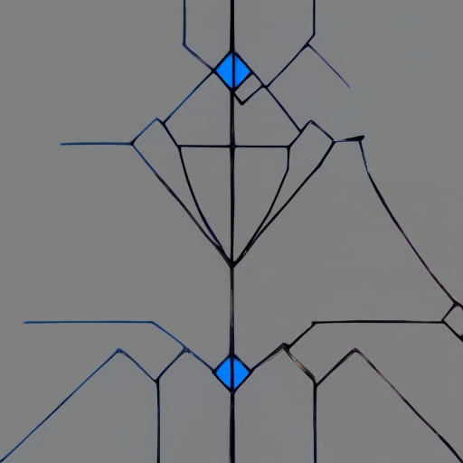
PSNR 39.85 dB, LPIPS 0.0040, DISTS 0.0185

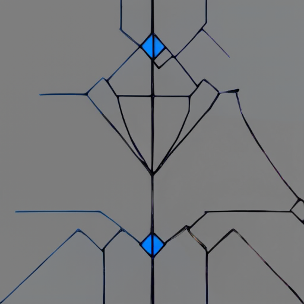
PSNR 36.44 dB, LPIPS 0.0063, DISTS 0.0098

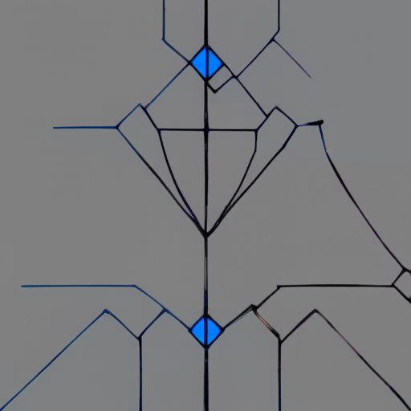
PSNR 35.95 dB, LPIPS 0.0108, DISTS 0.0307

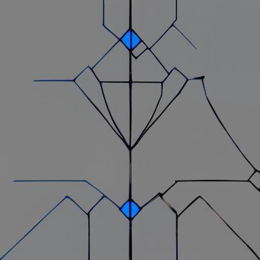
PSNR 36.15 dB, LPIPS 0.0104, DISTS 0.0303

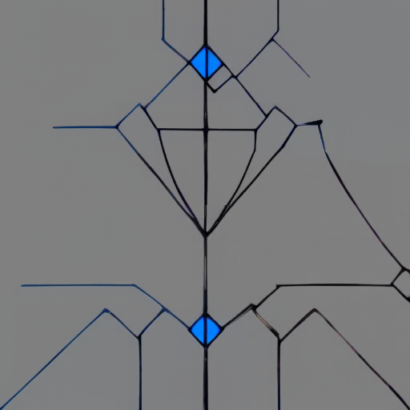
PSNR 36.34 dB, LPIPS 0.0105, DISTS 0.0302

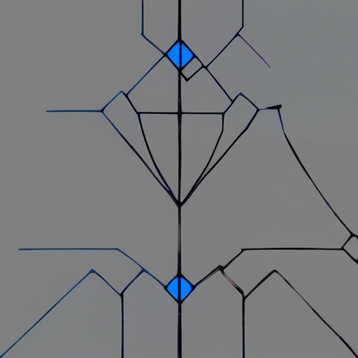
PSNR 36.60 dB, LPIPS 0.0098, DISTS 0.0292
Zoom: the 96×96 window at x=235, y=69 (the most fine detail in the source), 3× nearest neighbor.
Zoom: the 96×96 window at x=213, y=201 (the most fine detail in the source), 3× nearest neighbor.
magick_test_000_3_512 (512×512, magick)


PSNR 32.16 dB, LPIPS 0.0325, DISTS 0.0474

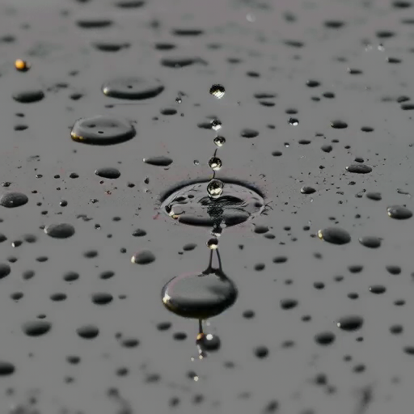
PSNR 32.30 dB, LPIPS 0.0315, DISTS 0.0468

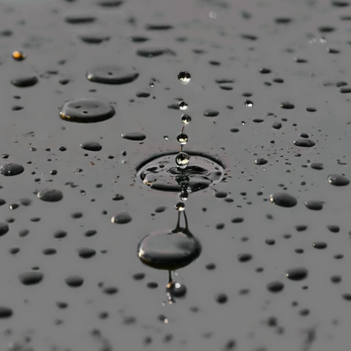
PSNR 32.24 dB, LPIPS 0.0243, DISTS 0.0317

PSNR 37.03 dB, LPIPS 0.0198, DISTS 0.0498

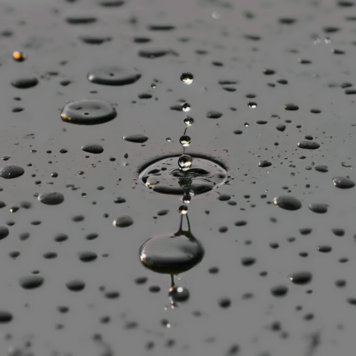
PSNR 36.46 dB, LPIPS 0.0159, DISTS 0.0210

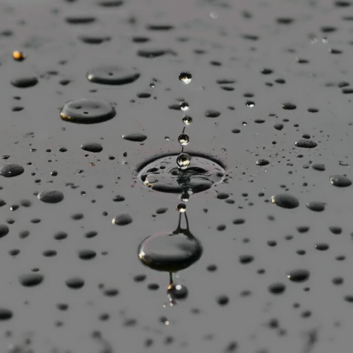
PSNR 34.91 dB, LPIPS 0.0223, DISTS 0.0263

PSNR 36.42 dB, LPIPS 0.0154, DISTS 0.0205

PSNR 37.84 dB, LPIPS 0.0166, DISTS 0.0493

PSNR 32.88 dB, LPIPS 0.0205, DISTS 0.0175

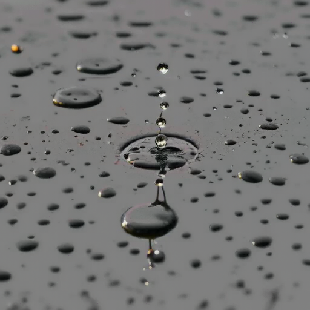
PSNR 33.58 dB, LPIPS 0.0289, DISTS 0.0438

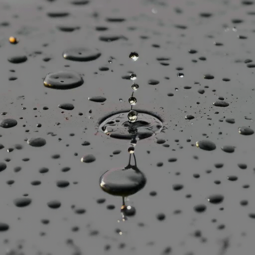
PSNR 33.39 dB, LPIPS 0.0306, DISTS 0.0446

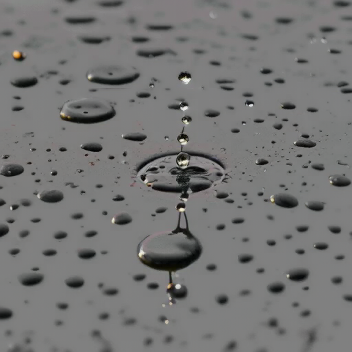
PSNR 33.91 dB, LPIPS 0.0276, DISTS 0.0425

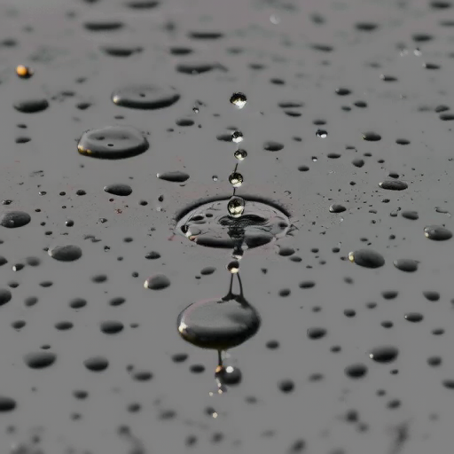
PSNR 33.72 dB, LPIPS 0.0286, DISTS 0.0417
Zoom: the 96×96 window at x=207, y=196 (the most fine detail in the source), 3× nearest neighbor.
Zoom: the 96×96 window at x=303, y=204 (the most fine detail in the source), 3× nearest neighbor.
pexels_15766766_f070 (512×512, pexels_val)


PSNR 22.44 dB, LPIPS 0.1558, DISTS 0.0930

PSNR 22.50 dB, LPIPS 0.1572, DISTS 0.0953

PSNR 25.20 dB, LPIPS 0.1516, DISTS 0.0674

PSNR 22.56 dB, LPIPS 0.1545, DISTS 0.0784

PSNR 24.85 dB, LPIPS 0.1479, DISTS 0.0626

PSNR 23.86 dB, LPIPS 0.1445, DISTS 0.0578

PSNR 24.83 dB, LPIPS 0.1438, DISTS 0.0589

PSNR 25.88 dB, LPIPS 0.1939, DISTS 0.1449

PSNR 22.51 dB, LPIPS 0.1355, DISTS 0.0447

PSNR 23.26 dB, LPIPS 0.1564, DISTS 0.0887

PSNR 23.25 dB, LPIPS 0.1556, DISTS 0.0924

PSNR 23.62 dB, LPIPS 0.1631, DISTS 0.0903

PSNR 23.65 dB, LPIPS 0.1639, DISTS 0.0950
Zoom: the 96×96 window at x=59, y=143 (the most fine detail in the source), 3× nearest neighbor.
Zoom: the 96×96 window at x=145, y=0 (the most fine detail in the source), 3× nearest neighbor.
pexels_8512366_f070 (512×512, pexels_val)


PSNR 30.69 dB, LPIPS 0.0416, DISTS 0.0655

PSNR 30.76 dB, LPIPS 0.0413, DISTS 0.0647

PSNR 34.98 dB, LPIPS 0.0221, DISTS 0.0234

PSNR 30.70 dB, LPIPS 0.0330, DISTS 0.0542

PSNR 34.60 dB, LPIPS 0.0229, DISTS 0.0259

PSNR 32.65 dB, LPIPS 0.0306, DISTS 0.0361

PSNR 34.60 dB, LPIPS 0.0223, DISTS 0.0281

PSNR 35.47 dB, LPIPS 0.0348, DISTS 0.0647

PSNR 31.99 dB, LPIPS 0.0232, DISTS 0.0192

PSNR 32.48 dB, LPIPS 0.0375, DISTS 0.0641

PSNR 32.91 dB, LPIPS 0.0343, DISTS 0.0586

PSNR 32.73 dB, LPIPS 0.0359, DISTS 0.0612

PSNR 33.10 dB, LPIPS 0.0319, DISTS 0.0546
Zoom: the 96×96 window at x=45, y=186 (the most fine detail in the source), 3× nearest neighbor.
Zoom: the 96×96 window at x=26, y=368 (the most fine detail in the source), 3× nearest neighbor.
pexels_8513880_f070 (512×512, pexels_val)


PSNR 27.26 dB, LPIPS 0.0727, DISTS 0.0507

PSNR 27.25 dB, LPIPS 0.0729, DISTS 0.0506

PSNR 32.49 dB, LPIPS 0.0314, DISTS 0.0161

PSNR 27.78 dB, LPIPS 0.0512, DISTS 0.0302

PSNR 31.93 dB, LPIPS 0.0363, DISTS 0.0186

PSNR 30.27 dB, LPIPS 0.0481, DISTS 0.0235

PSNR 31.88 dB, LPIPS 0.0356, DISTS 0.0188

PSNR 32.92 dB, LPIPS 0.0403, DISTS 0.0466

PSNR 28.79 dB, LPIPS 0.0423, DISTS 0.0119

PSNR 29.11 dB, LPIPS 0.0586, DISTS 0.0427

PSNR 29.04 dB, LPIPS 0.0537, DISTS 0.0385

PSNR 29.49 dB, LPIPS 0.0574, DISTS 0.0408

PSNR 29.55 dB, LPIPS 0.0506, DISTS 0.0385
Zoom: the 96×96 window at x=308, y=274 (the most fine detail in the source), 3× nearest neighbor.
Zoom: the 96×96 window at x=337, y=172 (the most fine detail in the source), 3× nearest neighbor.
pexels_8943809_f070 (512×512, pexels_val)


PSNR 34.26 dB, LPIPS 0.0396, DISTS 0.0378

PSNR 34.21 dB, LPIPS 0.0393, DISTS 0.0368

PSNR 40.12 dB, LPIPS 0.0185, DISTS 0.0086

PSNR 33.93 dB, LPIPS 0.0330, DISTS 0.0267

PSNR 39.73 dB, LPIPS 0.0219, DISTS 0.0106

PSNR 37.53 dB, LPIPS 0.0293, DISTS 0.0198

PSNR 39.73 dB, LPIPS 0.0216, DISTS 0.0103

PSNR 40.58 dB, LPIPS 0.0310, DISTS 0.0365

PSNR 35.35 dB, LPIPS 0.0235, DISTS 0.0095

PSNR 37.17 dB, LPIPS 0.0333, DISTS 0.0314

PSNR 37.95 dB, LPIPS 0.0305, DISTS 0.0279

PSNR 37.35 dB, LPIPS 0.0295, DISTS 0.0274

PSNR 38.10 dB, LPIPS 0.0265, DISTS 0.0240
Zoom: the 96×96 window at x=0, y=209 (the most fine detail in the source), 3× nearest neighbor.
Zoom: the 96×96 window at x=179, y=155 (the most fine detail in the source), 3× nearest neighbor.
pexels_5379424_f070 (512×512, pexels_val)


PSNR 32.35 dB, LPIPS 0.0381, DISTS 0.0696

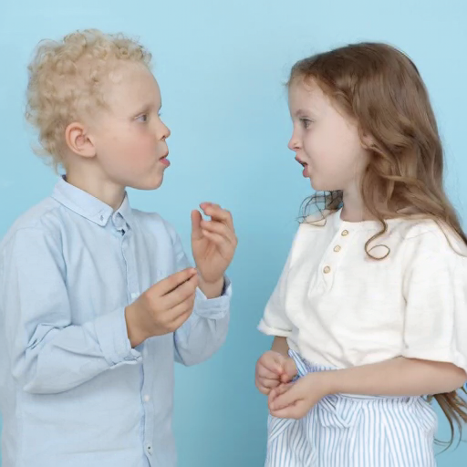
PSNR 32.39 dB, LPIPS 0.0374, DISTS 0.0693

PSNR 31.97 dB, LPIPS 0.0368, DISTS 0.0474

PSNR 36.34 dB, LPIPS 0.0213, DISTS 0.0226

PSNR 34.62 dB, LPIPS 0.0292, DISTS 0.0380

PSNR 36.35 dB, LPIPS 0.0211, DISTS 0.0230

PSNR 37.32 dB, LPIPS 0.0281, DISTS 0.0679

PSNR 33.06 dB, LPIPS 0.0253, DISTS 0.0203

PSNR 34.10 dB, LPIPS 0.0335, DISTS 0.0638

PSNR 34.18 dB, LPIPS 0.0332, DISTS 0.0650

PSNR 34.29 dB, LPIPS 0.0317, DISTS 0.0569

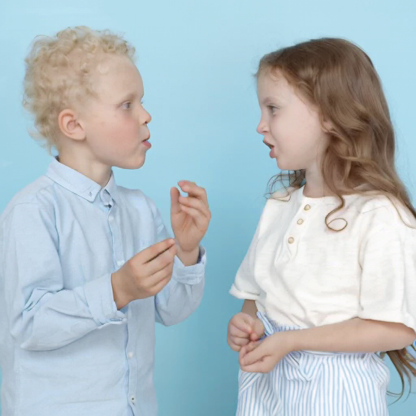
PSNR 34.34 dB, LPIPS 0.0323, DISTS 0.0599
Zoom: the 96×96 window at x=298, y=416 (the most fine detail in the source), 3× nearest neighbor.
Zoom: the 96×96 window at x=416, y=416 (the most fine detail in the source), 3× nearest neighbor.
pexels_5975322_f070 (512×512, pexels_val)


PSNR 33.30 dB, LPIPS 0.0506, DISTS 0.0561

PSNR 33.17 dB, LPIPS 0.0502, DISTS 0.0567

PSNR 33.54 dB, LPIPS 0.0439, DISTS 0.0407

PSNR 38.31 dB, LPIPS 0.0273, DISTS 0.0167

PSNR 36.50 dB, LPIPS 0.0343, DISTS 0.0261

PSNR 38.30 dB, LPIPS 0.0270, DISTS 0.0174

PSNR 39.43 dB, LPIPS 0.0409, DISTS 0.0566

PSNR 34.86 dB, LPIPS 0.0290, DISTS 0.0142

PSNR 35.90 dB, LPIPS 0.0415, DISTS 0.0484

PSNR 36.04 dB, LPIPS 0.0364, DISTS 0.0482

PSNR 36.18 dB, LPIPS 0.0389, DISTS 0.0456

PSNR 36.44 dB, LPIPS 0.0341, DISTS 0.0443
Zoom: the 96×96 window at x=334, y=122 (the most fine detail in the source), 3× nearest neighbor.
Zoom: the 96×96 window at x=366, y=251 (the most fine detail in the source), 3× nearest neighbor.
pexels_8106222_f070 (512×512, pexels_val)


PSNR 34.05 dB, LPIPS 0.0384, DISTS 0.0516

PSNR 34.04 dB, LPIPS 0.0382, DISTS 0.0496

PSNR 33.80 dB, LPIPS 0.0297, DISTS 0.0413

PSNR 40.17 dB, LPIPS 0.0182, DISTS 0.0132

PSNR 37.00 dB, LPIPS 0.0283, DISTS 0.0215

PSNR 40.17 dB, LPIPS 0.0176, DISTS 0.0135

PSNR 40.78 dB, LPIPS 0.0222, DISTS 0.0375

PSNR 35.73 dB, LPIPS 0.0223, DISTS 0.0116

PSNR 37.03 dB, LPIPS 0.0315, DISTS 0.0382

PSNR 38.17 dB, LPIPS 0.0284, DISTS 0.0351

PSNR 37.27 dB, LPIPS 0.0274, DISTS 0.0326

PSNR 38.34 dB, LPIPS 0.0254, DISTS 0.0301
Zoom: the 96×96 window at x=361, y=23 (the most fine detail in the source), 3× nearest neighbor.
Zoom: the 96×96 window at x=222, y=252 (the most fine detail in the source), 3× nearest neighbor.
pexels_8955255_f070 (512×512, pexels_val)


PSNR 22.57 dB, LPIPS 0.1528, DISTS 0.1202

PSNR 22.63 dB, LPIPS 0.1497, DISTS 0.1190

PSNR 22.46 dB, LPIPS 0.1513, DISTS 0.0918

PSNR 24.54 dB, LPIPS 0.1458, DISTS 0.0515

PSNR 23.70 dB, LPIPS 0.1414, DISTS 0.0624

PSNR 24.53 dB, LPIPS 0.1432, DISTS 0.0518

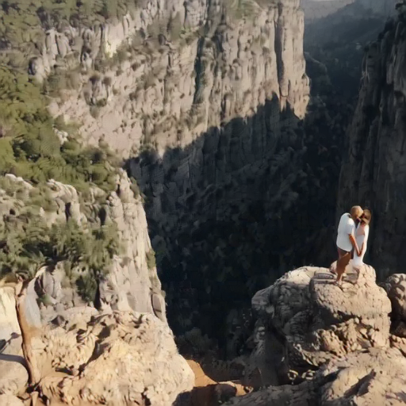
PSNR 25.57 dB, LPIPS 0.2051, DISTS 0.1587

PSNR 22.44 dB, LPIPS 0.1379, DISTS 0.0415

PSNR 23.29 dB, LPIPS 0.1494, DISTS 0.1121

PSNR 23.35 dB, LPIPS 0.1461, DISTS 0.1034

PSNR 23.71 dB, LPIPS 0.1517, DISTS 0.1081

PSNR 23.75 dB, LPIPS 0.1483, DISTS 0.1000
Zoom: the 96×96 window at x=397, y=357 (the most fine detail in the source), 3× nearest neighbor.
Zoom: the 96×96 window at x=0, y=266 (the most fine detail in the source), 3× nearest neighbor.
magick_test_000_13_512 (512×512, magick)


PSNR 42.15 dB, LPIPS 0.0119, DISTS 0.0523

PSNR 41.82 dB, LPIPS 0.0115, DISTS 0.0497

PSNR 46.38 dB, LPIPS 0.0041, DISTS 0.0118

PSNR 42.29 dB, LPIPS 0.0111, DISTS 0.0483

PSNR 43.26 dB, LPIPS 0.0092, DISTS 0.0423

PSNR 42.96 dB, LPIPS 0.0108, DISTS 0.0521

PSNR 43.57 dB, LPIPS 0.0095, DISTS 0.0455
Zoom: the 96×96 window at x=212, y=58 (the most fine detail in the source), 3× nearest neighbor.
Zoom: the 96×96 window at x=190, y=374 (the most fine detail in the source), 3× nearest neighbor.
magick_test_000_21_512 (512×512, magick)


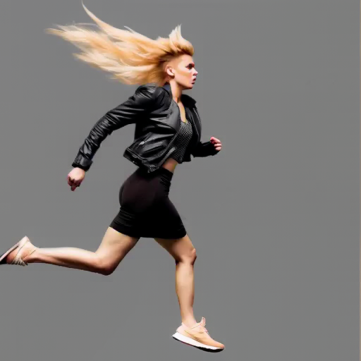
PSNR 32.44 dB, LPIPS 0.0220, DISTS 0.0627

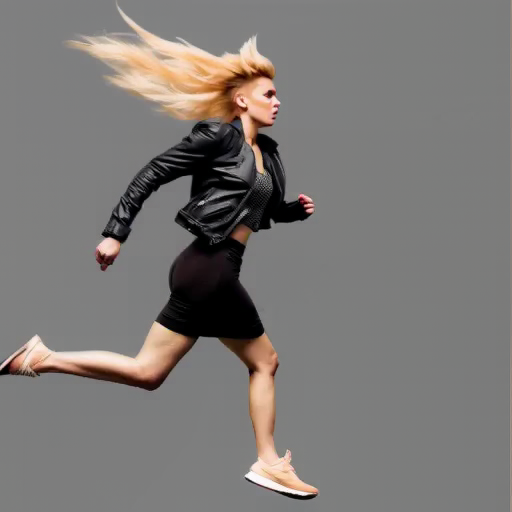
PSNR 32.16 dB, LPIPS 0.0217, DISTS 0.0626

PSNR 36.18 dB, LPIPS 0.0094, DISTS 0.0226

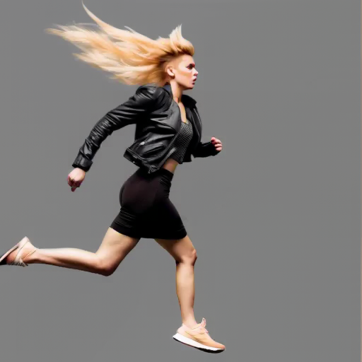
PSNR 32.93 dB, LPIPS 0.0206, DISTS 0.0604

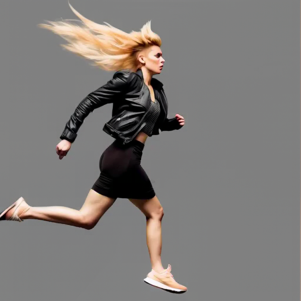
PSNR 33.15 dB, LPIPS 0.0162, DISTS 0.0509

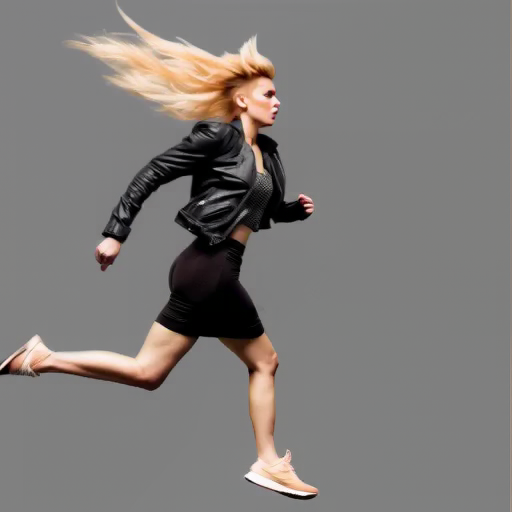
PSNR 33.21 dB, LPIPS 0.0208, DISTS 0.0562

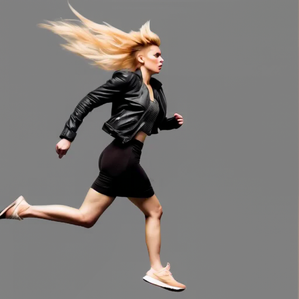
PSNR 33.49 dB, LPIPS 0.0164, DISTS 0.0449
Zoom: the 96×96 window at x=185, y=131 (the most fine detail in the source), 3× nearest neighbor.
Zoom: the 96×96 window at x=182, y=34 (the most fine detail in the source), 3× nearest neighbor.
magick_test_000_5_512 (512×512, magick)

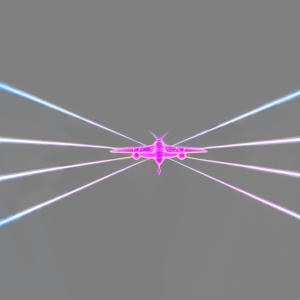

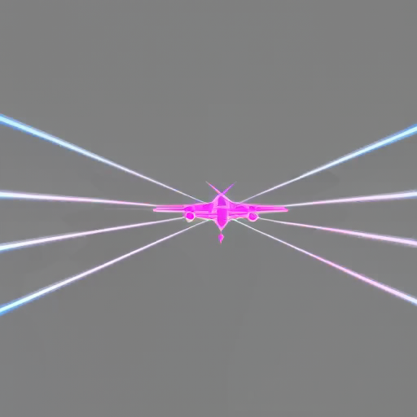
PSNR 34.36 dB, LPIPS 0.0148, DISTS 0.0663

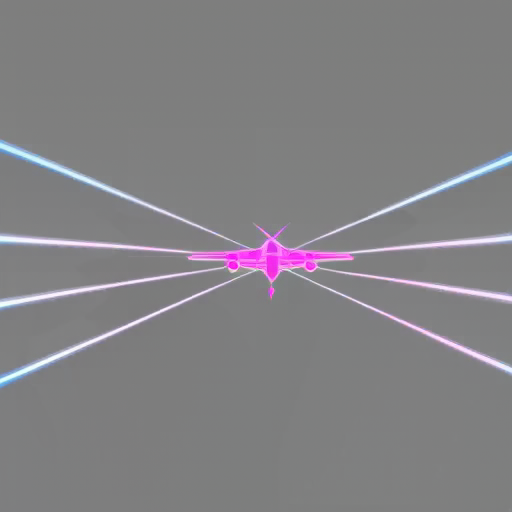
PSNR 33.77 dB, LPIPS 0.0148, DISTS 0.0668

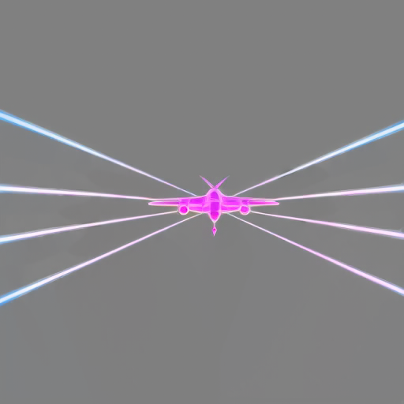
PSNR 37.11 dB, LPIPS 0.0043, DISTS 0.0263

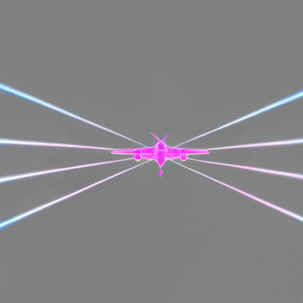
PSNR 34.78 dB, LPIPS 0.0119, DISTS 0.0630

PSNR 35.19 dB, LPIPS 0.0112, DISTS 0.0567

PSNR 35.12 dB, LPIPS 0.0108, DISTS 0.0612

PSNR 35.48 dB, LPIPS 0.0102, DISTS 0.0532
Zoom: the 96×96 window at x=224, y=221 (the most fine detail in the source), 3× nearest neighbor.
Zoom: the 96×96 window at x=320, y=216 (the most fine detail in the source), 3× nearest neighbor.
magick_test_000_8_512 (512×512, magick)


PSNR 28.46 dB, LPIPS 0.0203, DISTS 0.0908

PSNR 28.22 dB, LPIPS 0.0206, DISTS 0.0912

PSNR 40.02 dB, LPIPS 0.0031, DISTS 0.0231

PSNR 34.50 dB, LPIPS 0.0118, DISTS 0.0702

PSNR 34.87 dB, LPIPS 0.0112, DISTS 0.0702

PSNR 34.41 dB, LPIPS 0.0109, DISTS 0.0665

PSNR 34.75 dB, LPIPS 0.0102, DISTS 0.0659
Zoom: the 96×96 window at x=13, y=395 (the most fine detail in the source), 3× nearest neighbor.
Zoom: the 96×96 window at x=139, y=144 (the most fine detail in the source), 3× nearest neighbor.
Videos (141 frames, 512×512)
pexels_11610252_clip (141 frames, 512×512)
Videos are H.264 CRF 12 (the only lossy copies on this page); frame 70 is the lossless PNG of the decode.


Zoom: the 96×96 window at x=312, y=416 (the most fine detail in the source), 3× nearest neighbor.
Zoom: the 96×96 window at x=266, y=153 (the most fine detail in the source), 3× nearest neighbor.
| latent | PSNR dB | SSIM | LPIPS alex | LPIPS vgg | DISTS | FLUX.2 latent MSE | ΔE2000 | sharpness grad | sharpness HF | flicker | mean |z − mode| |
|---|---|---|---|---|---|---|---|---|---|---|---|
| H3 encoder (pipeline latent: posterior sample) | 27.11 | 0.7327 | 0.1250 | 0.1873 | 0.0878 | 0.4183 | 3.674 | 0.850 | 0.736 | 1.902 | 0.022 |
| H3 encoder (posterior mode) | 27.19 | 0.7359 | 0.1235 | 0.1835 | 0.0858 | 0.4106 | 3.650 | 0.847 | 0.730 | 1.956 | 0.000 |
| H3 encoder, tiled encode (mode) | 27.34 | 0.7304 | 0.0877 | 0.1661 | 0.0734 | 0.3993 | 3.035 | 0.883 | 0.779 | 1.760 | 0.260 |
| optimized latent: l1_vgg, 60 Adam steps (vid_l1vgg) | 28.66 | 0.7756 | 0.1017 | 0.1040 | 0.0459 | 0.3371 | 2.797 | 0.815 | 0.656 | 2.451 | 0.054 |
| optimized latent: l1_vgg_t, 60 Adam steps (vid_l1vggt) | 28.88 | 0.7841 | 0.1147 | 0.1122 | 0.0531 | 0.3398 | 2.842 | 0.803 | 0.646 | 2.513 | 0.055 |
| fine-tuned encoder (encft_ft1, latent reg 1.0) | 27.30 | 0.7384 | 0.1265 | 0.1799 | 0.0838 | 0.4052 | 3.596 | 0.835 | 0.699 | 2.024 | 0.048 |
| fine-tuned encoder (encft_ft1_tiled, latent reg 1.0) | 27.55 | 0.7352 | 0.0916 | 0.1647 | 0.0727 | 0.3939 | 2.962 | 0.858 | 0.723 | 1.952 | 0.250 |
| fine-tuned encoder (encft_ft2, latent reg 0.1) | 27.38 | 0.7383 | 0.1272 | 0.1785 | 0.0835 | 0.4052 | 3.600 | 0.791 | 0.626 | 2.531 | 0.092 |
| fine-tuned encoder (encft_ft2_tiled, latent reg 0.1) | 27.70 | 0.7373 | 0.0966 | 0.1642 | 0.0735 | 0.3928 | 2.941 | 0.818 | 0.654 | 2.398 | 0.253 |
| fine-tuned encoder (encft_ft3_tiled, latent reg 0.1) | 27.75 | 0.7384 | 0.0957 | 0.1625 | 0.0722 | 0.3902 | 2.916 | 0.818 | 0.654 | 2.489 | 0.249 |
pexels_5379424_clip (141 frames, 512×512)
Videos are H.264 CRF 12 (the only lossy copies on this page); frame 70 is the lossless PNG of the decode.


Zoom: the 96×96 window at x=298, y=416 (the most fine detail in the source), 3× nearest neighbor.
Zoom: the 96×96 window at x=416, y=416 (the most fine detail in the source), 3× nearest neighbor.
| latent | PSNR dB | SSIM | LPIPS alex | LPIPS vgg | DISTS | FLUX.2 latent MSE | ΔE2000 | sharpness grad | sharpness HF | flicker | mean |z − mode| |
|---|---|---|---|---|---|---|---|---|---|---|---|
| H3 encoder (pipeline latent: posterior sample) | 35.80 | 0.9441 | 0.0229 | 0.0974 | 0.0431 | 0.2193 | 1.476 | 0.957 | 0.901 | 0.142 | 0.025 |
| H3 encoder (posterior mode) | 35.98 | 0.9455 | 0.0222 | 0.0963 | 0.0424 | 0.2165 | 1.454 | 0.948 | 0.883 | 0.164 | 0.000 |
| H3 encoder, tiled encode (mode) | 36.26 | 0.9472 | 0.0214 | 0.0934 | 0.0411 | 0.2130 | 1.394 | 0.956 | 0.922 | 0.152 | 0.175 |
| optimized latent: l1_vgg, 60 Adam steps (vid_l1vgg) | 38.79 | 0.9629 | 0.0097 | 0.0342 | 0.0122 | 0.1278 | 1.140 | 0.970 | 0.909 | 0.142 | 0.047 |
| fine-tuned encoder (encft_ft1, latent reg 1.0) | 36.09 | 0.9468 | 0.0204 | 0.0875 | 0.0373 | 0.2013 | 1.441 | 0.954 | 0.858 | 0.133 | 0.040 |
| fine-tuned encoder (encft_ft1_tiled, latent reg 1.0) | 36.46 | 0.9482 | 0.0204 | 0.0868 | 0.0377 | 0.2010 | 1.363 | 0.952 | 0.874 | 0.138 | 0.171 |
| fine-tuned encoder (encft_ft2, latent reg 0.1) | 36.11 | 0.9469 | 0.0197 | 0.0796 | 0.0323 | 0.1942 | 1.439 | 0.940 | 0.805 | 0.196 | 0.076 |
| fine-tuned encoder (encft_ft2_tiled, latent reg 0.1) | 36.41 | 0.9482 | 0.0197 | 0.0795 | 0.0337 | 0.1942 | 1.379 | 0.938 | 0.822 | 0.196 | 0.180 |
| fine-tuned encoder (encft_ft3_tiled, latent reg 0.1) | 36.59 | 0.9492 | 0.0184 | 0.0789 | 0.0319 | 0.1900 | 1.342 | 0.958 | 0.875 | 0.176 | 0.174 |
pexels_8513880_clip (141 frames, 512×512)
Videos are H.264 CRF 12 (the only lossy copies on this page); frame 70 is the lossless PNG of the decode.


Zoom: the 96×96 window at x=308, y=274 (the most fine detail in the source), 3× nearest neighbor.
Zoom: the 96×96 window at x=337, y=172 (the most fine detail in the source), 3× nearest neighbor.
| latent | PSNR dB | SSIM | LPIPS alex | LPIPS vgg | DISTS | FLUX.2 latent MSE | ΔE2000 | sharpness grad | sharpness HF | flicker | mean |z − mode| |
|---|---|---|---|---|---|---|---|---|---|---|---|
| H3 encoder (pipeline latent: posterior sample) | 29.60 | 0.9234 | 0.0501 | 0.1002 | 0.0395 | 0.2386 | 2.636 | 0.938 | 0.854 | 0.582 | 0.020 |
| H3 encoder (posterior mode) | 29.75 | 0.9253 | 0.0492 | 0.0974 | 0.0384 | 0.2325 | 2.593 | 0.933 | 0.836 | 0.637 | 0.000 |
| H3 encoder, tiled encode (mode) | 29.78 | 0.9260 | 0.0428 | 0.0914 | 0.0345 | 0.2259 | 2.500 | 0.976 | 0.934 | 0.456 | 0.264 |
| optimized latent: l1_vgg, 60 Adam steps (vid_l1vgg) | 32.31 | 0.9511 | 0.0261 | 0.0422 | 0.0149 | 0.1449 | 2.024 | 0.955 | 0.848 | 0.500 | 0.050 |
| fine-tuned encoder (encft_ft1, latent reg 1.0) | 29.81 | 0.9261 | 0.0459 | 0.0923 | 0.0354 | 0.2218 | 2.583 | 0.942 | 0.833 | 0.600 | 0.053 |
| fine-tuned encoder (encft_ft1_tiled, latent reg 1.0) | 29.96 | 0.9283 | 0.0403 | 0.0869 | 0.0329 | 0.2179 | 2.438 | 0.974 | 0.908 | 0.455 | 0.261 |
| fine-tuned encoder (encft_ft2, latent reg 0.1) | 29.77 | 0.9247 | 0.0464 | 0.0896 | 0.0352 | 0.2186 | 2.584 | 0.922 | 0.770 | 0.792 | 0.086 |
| fine-tuned encoder (encft_ft2_tiled, latent reg 0.1) | 30.02 | 0.9282 | 0.0406 | 0.0846 | 0.0327 | 0.2138 | 2.432 | 0.956 | 0.850 | 0.617 | 0.258 |
| fine-tuned encoder (encft_ft3_tiled, latent reg 0.1) | 30.10 | 0.9290 | 0.0397 | 0.0833 | 0.0320 | 0.2108 | 2.415 | 0.952 | 0.849 | 0.686 | 0.250 |
pexels_8943809_clip (141 frames, 512×512)
Videos are H.264 CRF 12 (the only lossy copies on this page); frame 70 is the lossless PNG of the decode.


Zoom: the 96×96 window at x=0, y=209 (the most fine detail in the source), 3× nearest neighbor.
Zoom: the 96×96 window at x=179, y=155 (the most fine detail in the source), 3× nearest neighbor.
| latent | PSNR dB | SSIM | LPIPS alex | LPIPS vgg | DISTS | FLUX.2 latent MSE | ΔE2000 | sharpness grad | sharpness HF | flicker | mean |z − mode| |
|---|---|---|---|---|---|---|---|---|---|---|---|
| H3 encoder (pipeline latent: posterior sample) | 37.77 | 0.9543 | 0.0329 | 0.1067 | 0.0331 | 0.2441 | 1.855 | 0.959 | 0.933 | 0.286 | 0.024 |
| H3 encoder (posterior mode) | 37.84 | 0.9549 | 0.0327 | 0.1052 | 0.0321 | 0.2409 | 1.854 | 0.954 | 0.926 | 0.306 | 0.000 |
| H3 encoder, tiled encode (mode) | 38.86 | 0.9557 | 0.0263 | 0.0949 | 0.0267 | 0.2281 | 1.374 | 0.968 | 0.965 | 0.286 | 0.268 |
| optimized latent: l1_vgg, 60 Adam steps (vid_l1vgg) | 40.79 | 0.9634 | 0.0166 | 0.0458 | 0.0097 | 0.1641 | 1.157 | 0.972 | 0.934 | 0.282 | 0.052 |
| fine-tuned encoder (encft_ft1, latent reg 1.0) | 38.05 | 0.9559 | 0.0294 | 0.0966 | 0.0281 | 0.2246 | 1.810 | 0.965 | 0.928 | 0.253 | 0.064 |
| fine-tuned encoder (encft_ft1_tiled, latent reg 1.0) | 39.30 | 0.9561 | 0.0242 | 0.0888 | 0.0235 | 0.2181 | 1.326 | 0.974 | 0.952 | 0.250 | 0.265 |
| fine-tuned encoder (encft_ft2, latent reg 0.1) | 38.03 | 0.9553 | 0.0257 | 0.0889 | 0.0230 | 0.2152 | 1.793 | 0.965 | 0.903 | 0.256 | 0.104 |
| fine-tuned encoder (encft_ft2_tiled, latent reg 0.1) | 39.22 | 0.9552 | 0.0216 | 0.0819 | 0.0195 | 0.2098 | 1.323 | 0.978 | 0.939 | 0.234 | 0.265 |
| fine-tuned encoder (encft_ft3_tiled, latent reg 0.1) | 39.40 | 0.9561 | 0.0212 | 0.0827 | 0.0198 | 0.2092 | 1.312 | 0.981 | 0.946 | 0.265 | 0.265 |
pexels_8955255_clip (141 frames, 512×512)
Videos are H.264 CRF 12 (the only lossy copies on this page); frame 70 is the lossless PNG of the decode.


Zoom: the 96×96 window at x=397, y=357 (the most fine detail in the source), 3× nearest neighbor.
Zoom: the 96×96 window at x=0, y=266 (the most fine detail in the source), 3× nearest neighbor.
| latent | PSNR dB | SSIM | LPIPS alex | LPIPS vgg | DISTS | FLUX.2 latent MSE | ΔE2000 | sharpness grad | sharpness HF | flicker | mean |z − mode| |
|---|---|---|---|---|---|---|---|---|---|---|---|
| H3 encoder (pipeline latent: posterior sample) | 24.79 | 0.7672 | 0.1081 | 0.1780 | 0.0764 | 0.3216 | 4.193 | 0.956 | 0.849 | 1.479 | 0.015 |
| H3 encoder (posterior mode) | 24.92 | 0.7725 | 0.1064 | 0.1739 | 0.0747 | 0.3133 | 4.132 | 0.949 | 0.837 | 1.554 | 0.000 |
| H3 encoder, tiled encode (mode) | 25.04 | 0.7735 | 0.0985 | 0.1679 | 0.0727 | 0.3048 | 3.897 | 0.931 | 0.816 | 1.616 | 0.210 |
| optimized latent: l1_vgg, 60 Adam steps (vid_l1vgg) | 26.92 | 0.8398 | 0.0856 | 0.0930 | 0.0492 | 0.2132 | 3.250 | 0.893 | 0.708 | 2.281 | 0.047 |
| optimized latent: l1_vgg_t, 60 Adam steps (vid_l1vggt) | 27.04 | 0.8425 | 0.0930 | 0.0994 | 0.0550 | 0.2171 | 3.251 | 0.879 | 0.683 | 2.446 | 0.049 |
| fine-tuned encoder (encft_ft1, latent reg 1.0) | 25.15 | 0.7759 | 0.1070 | 0.1711 | 0.0728 | 0.3089 | 4.041 | 0.923 | 0.755 | 1.929 | 0.041 |
| fine-tuned encoder (encft_ft1_tiled, latent reg 1.0) | 25.34 | 0.7784 | 0.1010 | 0.1663 | 0.0716 | 0.3008 | 3.784 | 0.890 | 0.709 | 2.112 | 0.208 |
| fine-tuned encoder (encft_ft2, latent reg 0.1) | 25.33 | 0.7781 | 0.1088 | 0.1737 | 0.0744 | 0.3107 | 3.987 | 0.882 | 0.672 | 2.445 | 0.078 |
| fine-tuned encoder (encft_ft2_tiled, latent reg 0.1) | 25.52 | 0.7810 | 0.1036 | 0.1685 | 0.0743 | 0.3001 | 3.722 | 0.851 | 0.632 | 2.605 | 0.212 |
| fine-tuned encoder (encft_ft3_tiled, latent reg 0.1) | 25.59 | 0.7841 | 0.1048 | 0.1657 | 0.0731 | 0.2941 | 3.683 | 0.855 | 0.639 | 2.606 | 0.212 |
pexels_10398647_clip (141 frames, 512×512)
Videos are H.264 CRF 12 (the only lossy copies on this page); frame 70 is the lossless PNG of the decode.


Zoom: the 96×96 window at x=6, y=416 (the most fine detail in the source), 3× nearest neighbor.
Zoom: the 96×96 window at x=404, y=408 (the most fine detail in the source), 3× nearest neighbor.
| latent | PSNR dB | SSIM | LPIPS alex | LPIPS vgg | DISTS | FLUX.2 latent MSE | ΔE2000 | sharpness grad | sharpness HF | flicker | mean |z − mode| |
|---|---|---|---|---|---|---|---|---|---|---|---|
| H3 encoder (pipeline latent: posterior sample) | 33.05 | 0.8558 | 0.1156 | 0.1766 | 0.0716 | 0.2873 | 2.024 | 0.827 | 0.733 | 0.903 | 0.034 |
| H3 encoder (posterior mode) | 33.15 | 0.8595 | 0.1144 | 0.1718 | 0.0702 | 0.2745 | 2.002 | 0.821 | 0.726 | 0.945 | 0.000 |
| H3 encoder, tiled encode (mode) | 32.96 | 0.8545 | 0.0848 | 0.1459 | 0.0485 | 0.2499 | 1.928 | 0.954 | 0.883 | 0.640 | 0.333 |
| fine-tuned encoder (encft_ft1, latent reg 1.0) | 33.43 | 0.8598 | 0.1125 | 0.1656 | 0.0637 | 0.2661 | 1.910 | 0.811 | 0.711 | 1.025 | 0.053 |
| fine-tuned encoder (encft_ft1_tiled, latent reg 1.0) | 33.24 | 0.8572 | 0.0835 | 0.1372 | 0.0431 | 0.2402 | 1.875 | 0.929 | 0.841 | 0.741 | 0.329 |
| fine-tuned encoder (encft_ft2, latent reg 0.1) | 33.45 | 0.8593 | 0.1075 | 0.1622 | 0.0583 | 0.2682 | 1.920 | 0.780 | 0.678 | 1.126 | 0.096 |
| fine-tuned encoder (encft_ft2_tiled, latent reg 0.1) | 33.35 | 0.8586 | 0.0772 | 0.1336 | 0.0381 | 0.2373 | 1.925 | 0.891 | 0.798 | 0.852 | 0.332 |
| fine-tuned encoder (encft_ft3_tiled, latent reg 0.1) | 33.43 | 0.8604 | 0.0808 | 0.1336 | 0.0399 | 0.2338 | 1.857 | 0.903 | 0.806 | 0.839 | 0.336 |
pexels_14620833_clip (141 frames, 512×512)
Videos are H.264 CRF 12 (the only lossy copies on this page); frame 70 is the lossless PNG of the decode.


Zoom: the 96×96 window at x=206, y=416 (the most fine detail in the source), 3× nearest neighbor.
Zoom: the 96×96 window at x=22, y=393 (the most fine detail in the source), 3× nearest neighbor.
| latent | PSNR dB | SSIM | LPIPS alex | LPIPS vgg | DISTS | FLUX.2 latent MSE | ΔE2000 | sharpness grad | sharpness HF | flicker | mean |z − mode| |
|---|---|---|---|---|---|---|---|---|---|---|---|
| H3 encoder (pipeline latent: posterior sample) | 35.06 | 0.9208 | 0.0625 | 0.1496 | 0.0726 | 0.2844 | 1.907 | 0.847 | 0.827 | 0.392 | 0.031 |
| H3 encoder (posterior mode) | 35.17 | 0.9224 | 0.0616 | 0.1458 | 0.0707 | 0.2749 | 1.890 | 0.845 | 0.821 | 0.403 | 0.000 |
| H3 encoder, tiled encode (mode) | 35.69 | 0.9201 | 0.0414 | 0.1230 | 0.0468 | 0.2625 | 1.584 | 0.924 | 0.939 | 0.280 | 0.274 |
| fine-tuned encoder (encft_ft1, latent reg 1.0) | 35.19 | 0.9222 | 0.0589 | 0.1350 | 0.0655 | 0.2652 | 1.925 | 0.846 | 0.802 | 0.376 | 0.045 |
| fine-tuned encoder (encft_ft1_tiled, latent reg 1.0) | 36.00 | 0.9210 | 0.0398 | 0.1132 | 0.0421 | 0.2509 | 1.556 | 0.920 | 0.903 | 0.268 | 0.267 |
| fine-tuned encoder (encft_ft2, latent reg 0.1) | 35.06 | 0.9212 | 0.0539 | 0.1224 | 0.0603 | 0.2594 | 1.945 | 0.839 | 0.773 | 0.399 | 0.085 |
| fine-tuned encoder (encft_ft2_tiled, latent reg 0.1) | 35.99 | 0.9200 | 0.0362 | 0.1005 | 0.0386 | 0.2458 | 1.583 | 0.909 | 0.867 | 0.290 | 0.282 |
| fine-tuned encoder (encft_ft3_tiled, latent reg 0.1) | 36.01 | 0.9206 | 0.0357 | 0.1019 | 0.0371 | 0.2415 | 1.561 | 0.921 | 0.883 | 0.305 | 0.272 |
pexels_15766766_clip (141 frames, 512×512)
Videos are H.264 CRF 12 (the only lossy copies on this page); frame 70 is the lossless PNG of the decode.


Zoom: the 96×96 window at x=59, y=143 (the most fine detail in the source), 3× nearest neighbor.
Zoom: the 96×96 window at x=145, y=0 (the most fine detail in the source), 3× nearest neighbor.
| latent | PSNR dB | SSIM | LPIPS alex | LPIPS vgg | DISTS | FLUX.2 latent MSE | ΔE2000 | sharpness grad | sharpness HF | flicker | mean |z − mode| |
|---|---|---|---|---|---|---|---|---|---|---|---|
| H3 encoder (pipeline latent: posterior sample) | 25.84 | 0.7833 | 0.0925 | 0.1470 | 0.0566 | 0.2625 | 3.930 | 0.979 | 0.915 | 0.300 | 0.017 |
| H3 encoder (posterior mode) | 26.01 | 0.7892 | 0.0920 | 0.1431 | 0.0554 | 0.2543 | 3.860 | 0.970 | 0.899 | 0.385 | 0.000 |
| H3 encoder, tiled encode (mode) | 26.00 | 0.7887 | 0.0889 | 0.1418 | 0.0532 | 0.2513 | 3.770 | 0.967 | 0.901 | 0.379 | 0.163 |
| fine-tuned encoder (encft_ft1, latent reg 1.0) | 26.23 | 0.7929 | 0.0923 | 0.1391 | 0.0539 | 0.2495 | 3.790 | 0.942 | 0.822 | 0.624 | 0.048 |
| fine-tuned encoder (encft_ft1_tiled, latent reg 1.0) | 26.33 | 0.7944 | 0.0919 | 0.1379 | 0.0538 | 0.2453 | 3.652 | 0.927 | 0.795 | 0.732 | 0.165 |
| fine-tuned encoder (encft_ft2, latent reg 0.1) | 26.44 | 0.7970 | 0.0960 | 0.1397 | 0.0560 | 0.2475 | 3.704 | 0.906 | 0.745 | 0.955 | 0.088 |
| fine-tuned encoder (encft_ft2_tiled, latent reg 0.1) | 26.53 | 0.7985 | 0.0969 | 0.1383 | 0.0573 | 0.2427 | 3.572 | 0.894 | 0.723 | 1.056 | 0.178 |
| fine-tuned encoder (encft_ft3_tiled, latent reg 0.1) | 26.61 | 0.8006 | 0.0972 | 0.1363 | 0.0563 | 0.2378 | 3.535 | 0.891 | 0.716 | 1.130 | 0.174 |
pexels_5975322_clip (141 frames, 512×512)
Videos are H.264 CRF 12 (the only lossy copies on this page); frame 70 is the lossless PNG of the decode.


Zoom: the 96×96 window at x=334, y=122 (the most fine detail in the source), 3× nearest neighbor.
Zoom: the 96×96 window at x=366, y=251 (the most fine detail in the source), 3× nearest neighbor.
| latent | PSNR dB | SSIM | LPIPS alex | LPIPS vgg | DISTS | FLUX.2 latent MSE | ΔE2000 | sharpness grad | sharpness HF | flicker | mean |z − mode| |
|---|---|---|---|---|---|---|---|---|---|---|---|
| H3 encoder (pipeline latent: posterior sample) | 36.94 | 0.9532 | 0.0359 | 0.1231 | 0.0401 | 0.2814 | 1.809 | 0.965 | 0.957 | 0.275 | 0.025 |
| H3 encoder (posterior mode) | 37.05 | 0.9542 | 0.0354 | 0.1211 | 0.0398 | 0.2767 | 1.807 | 0.959 | 0.934 | 0.294 | 0.000 |
| H3 encoder, tiled encode (mode) | 37.53 | 0.9522 | 0.0309 | 0.1141 | 0.0360 | 0.2685 | 1.569 | 0.972 | 0.987 | 0.282 | 0.288 |
| fine-tuned encoder (encft_ft1, latent reg 1.0) | 37.96 | 0.9565 | 0.0326 | 0.1142 | 0.0348 | 0.2597 | 1.717 | 0.972 | 0.955 | 0.272 | 0.064 |
| fine-tuned encoder (encft_ft1_tiled, latent reg 1.0) | 38.79 | 0.9576 | 0.0284 | 0.1074 | 0.0318 | 0.2551 | 1.479 | 0.981 | 0.992 | 0.265 | 0.277 |
| fine-tuned encoder (encft_ft2, latent reg 0.1) | 37.97 | 0.9566 | 0.0291 | 0.1074 | 0.0301 | 0.2517 | 1.709 | 0.963 | 0.906 | 0.299 | 0.096 |
| fine-tuned encoder (encft_ft2_tiled, latent reg 0.1) | 38.85 | 0.9581 | 0.0255 | 0.1010 | 0.0278 | 0.2470 | 1.469 | 0.973 | 0.950 | 0.287 | 0.269 |
| fine-tuned encoder (encft_ft3_tiled, latent reg 0.1) | 38.97 | 0.9584 | 0.0253 | 0.1009 | 0.0271 | 0.2458 | 1.461 | 0.975 | 0.957 | 0.299 | 0.273 |
Optimization curves
Encoder fine-tuning: training loss relative to H3's own encoder (same batch; below 1 = better)
images: PSNR dB
images: LPIPS alex
images: DISTS
videos: PSNR dB
videos: LPIPS alex
Metric tables
Bold = best in its column. PSNR / SSIM / ΔE2000 / sharpness / flicker use the decoder frenzy's own metric functions (fastdec_ga/score.py, copied into data/processors/h3_enc_lib.py); sharpness = decode / source (1 = as sharp as the source). DISTS and the FLUX.2 latent MSE are held-out judges whenever the objective did not use them. Each table compares runs on exactly the same samples.
| latent | PSNR dB | SSIM | LPIPS alex | LPIPS vgg | DISTS | FLUX.2 latent MSE | ΔE2000 | sharpness grad | sharpness HF | mean |z − mode| |
|---|---|---|---|---|---|---|---|---|---|---|
| H3 encoder (pipeline latent: posterior sample) | 32.53 | 0.9116 | 0.0519 | 0.1214 | 0.0623 | 0.3090 | 2.336 | 0.950 | 0.858 | 0.029 |
| H3 encoder (posterior mode) | 32.32 | 0.9129 | 0.0513 | 0.1187 | 0.0618 | 0.3013 | 2.396 | 0.946 | 0.849 | 0.000 |
| H3 encoder, tiled encode (mode) | 32.37 | 0.9110 | 0.0446 | 0.1121 | 0.0552 | 0.2990 | 2.251 | 0.963 | 0.912 | 0.175 |
| fine-tuned encoder (encft_ft1, latent reg 1.0) | 34.44 | 0.9188 | 0.0471 | 0.1092 | 0.0555 | 0.2849 | 1.998 | 0.949 | 0.834 | 0.030 |
| fine-tuned encoder (encft_ft1_tiled, latent reg 1.0) | 34.86 | 0.9181 | 0.0406 | 0.1029 | 0.0486 | 0.2803 | 1.789 | 0.965 | 0.891 | 0.175 |
| fine-tuned encoder (encft_ft2, latent reg 0.1) | 34.71 | 0.9210 | 0.0460 | 0.1028 | 0.0522 | 0.2728 | 1.946 | 0.936 | 0.796 | 0.063 |
| fine-tuned encoder (encft_ft2_tiled, latent reg 0.1) | 35.14 | 0.9209 | 0.0399 | 0.0972 | 0.0459 | 0.2686 | 1.741 | 0.952 | 0.849 | 0.180 |
| latent | PSNR dB | SSIM | LPIPS alex | LPIPS vgg | DISTS | FLUX.2 latent MSE | ΔE2000 | sharpness grad | sharpness HF | mean |z − mode| |
|---|---|---|---|---|---|---|---|---|---|---|
| H3 encoder (pipeline latent: posterior sample) | 31.93 | 0.9097 | 0.0457 | 0.1080 | 0.0627 | 0.3075 | 2.364 | 0.968 | 0.873 | 0.031 |
| H3 encoder (posterior mode) | 31.71 | 0.9109 | 0.0454 | 0.1065 | 0.0625 | 0.3008 | 2.448 | 0.963 | 0.861 | 0.000 |
| H3 encoder, tiled encode (mode) | 31.59 | 0.9100 | 0.0431 | 0.1036 | 0.0592 | 0.3018 | 2.399 | 0.974 | 0.910 | 0.157 |
| optimized latent: l1_vgg, 100 Adam steps (img_l1vgg) | 36.40 | 0.9379 | 0.0310 | 0.0429 | 0.0234 | 0.1738 | 1.482 | 0.953 | 0.856 | 0.058 |
| latent | PSNR dB | SSIM | LPIPS alex | LPIPS vgg | DISTS | FLUX.2 latent MSE | ΔE2000 | sharpness grad | sharpness HF | mean |z − mode| |
|---|---|---|---|---|---|---|---|---|---|---|
| H3 encoder (pipeline latent: posterior sample) | 31.12 | 0.8869 | 0.0552 | 0.1275 | 0.0610 | 0.3290 | 2.592 | 0.957 | 0.870 | 0.026 |
| H3 encoder (posterior mode) | 30.95 | 0.8884 | 0.0549 | 0.1257 | 0.0608 | 0.3258 | 2.659 | 0.953 | 0.857 | 0.000 |
| H3 encoder, tiled encode (mode) | 30.96 | 0.8872 | 0.0522 | 0.1228 | 0.0581 | 0.3258 | 2.579 | 0.958 | 0.887 | 0.173 |
| optimized latent: flux, 100 Adam steps (img_flux) | 31.11 | 0.8998 | 0.0490 | 0.0902 | 0.0444 | 0.1433 | 2.506 | 0.985 | 0.890 | 0.068 |
| optimized latent: l1_vgg, prior 0.001, 100 Adam steps (img_l1vgg_prior) | 33.71 | 0.9091 | 0.0440 | 0.0665 | 0.0311 | 0.2394 | 2.048 | 0.950 | 0.858 | 0.032 |
| optimized latent: l1_vgg_flux, 100 Adam steps (img_l1vggflux) | 35.21 | 0.9211 | 0.0388 | 0.0525 | 0.0242 | 0.1770 | 1.751 | 0.943 | 0.845 | 0.062 |
| optimized latent: l2, 100 Adam steps (img_l2) | 36.21 | 0.9280 | 0.0530 | 0.1207 | 0.0676 | 0.2696 | 1.775 | 0.936 | 0.835 | 0.058 |
| optimized latent: lpips_vgg, 100 Adam steps (img_lpipsvgg) | 32.15 | 0.9000 | 0.0401 | 0.0500 | 0.0191 | 0.2296 | 2.338 | 0.982 | 0.911 | 0.058 |
| latent | PSNR dB | SSIM | LPIPS alex | LPIPS vgg | DISTS | FLUX.2 latent MSE | ΔE2000 | sharpness grad | sharpness HF | mean |z − mode| |
|---|---|---|---|---|---|---|---|---|---|---|
| H3 encoder (pipeline latent: posterior sample) | 28.66 | 0.8311 | 0.0774 | 0.1621 | 0.0617 | 0.3710 | 3.438 | 0.906 | 0.820 | 0.016 |
| H3 encoder (posterior mode) | 28.68 | 0.8334 | 0.0777 | 0.1593 | 0.0619 | 0.3647 | 3.426 | 0.902 | 0.811 | 0.000 |
| H3 encoder, tiled encode (mode) | 28.89 | 0.8326 | 0.0733 | 0.1554 | 0.0603 | 0.3588 | 3.289 | 0.905 | 0.822 | 0.198 |
| optimized latent: l1_vgg, 400 Adam steps (img_ceiling) | 33.20 | 0.8910 | 0.0559 | 0.0664 | 0.0289 | 0.2365 | 2.288 | 0.917 | 0.830 | 0.132 |
| latent | PSNR dB | SSIM | LPIPS alex | LPIPS vgg | DISTS | FLUX.2 latent MSE | ΔE2000 | sharpness grad | sharpness HF | mean |z − mode| |
|---|---|---|---|---|---|---|---|---|---|---|
| H3 encoder (pipeline latent: posterior sample) | 34.14 | 0.9725 | 0.0182 | 0.0473 | 0.0467 | 0.2554 | 1.394 | 1.046 | 0.939 | 0.045 |
| H3 encoder (posterior mode) | 33.61 | 0.9730 | 0.0181 | 0.0477 | 0.0469 | 0.2576 | 1.618 | 1.041 | 0.916 | 0.000 |
| H3 encoder, tiled encode (mode) | 33.21 | 0.9725 | 0.0184 | 0.0477 | 0.0458 | 0.2669 | 1.675 | 1.054 | 0.985 | 0.128 |
| optimized latent: l1, 100 Adam steps (img_l1) | 38.30 | 0.9849 | 0.0118 | 0.0326 | 0.0485 | 0.1255 | 0.719 | 0.979 | 0.861 | 0.047 |
| latent | PSNR dB | SSIM | LPIPS alex | LPIPS vgg | DISTS | FLUX.2 latent MSE | ΔE2000 | sharpness grad | sharpness HF | flicker | mean |z − mode| |
|---|---|---|---|---|---|---|---|---|---|---|---|
| H3 encoder (pipeline latent: posterior sample) | 33.64 | 0.9033 | 0.0569 | 0.1254 | 0.0556 | 0.2693 | 2.178 | 0.943 | 0.884 | 0.475 | 0.023 |
| H3 encoder (posterior mode) | 33.78 | 0.9055 | 0.0562 | 0.1226 | 0.0545 | 0.2633 | 2.152 | 0.938 | 0.873 | 0.507 | 0.000 |
| H3 encoder, tiled encode (mode) | 34.12 | 0.9052 | 0.0472 | 0.1140 | 0.0476 | 0.2546 | 1.950 | 0.960 | 0.919 | 0.473 | 0.225 |
| fine-tuned encoder (encft_ft1, latent reg 1.0) | 33.95 | 0.9071 | 0.0532 | 0.1155 | 0.0500 | 0.2521 | 2.120 | 0.941 | 0.860 | 0.536 | 0.052 |
| fine-tuned encoder (encft_ft1_tiled, latent reg 1.0) | 34.49 | 0.9078 | 0.0456 | 0.1082 | 0.0444 | 0.2453 | 1.892 | 0.954 | 0.888 | 0.527 | 0.222 |
| fine-tuned encoder (encft_ft2, latent reg 0.1) | 33.93 | 0.9073 | 0.0515 | 0.1107 | 0.0474 | 0.2470 | 2.111 | 0.926 | 0.822 | 0.657 | 0.089 |
| fine-tuned encoder (encft_ft2_tiled, latent reg 0.1) | 34.47 | 0.9084 | 0.0447 | 0.1038 | 0.0426 | 0.2400 | 1.889 | 0.940 | 0.853 | 0.635 | 0.227 |
| fine-tuned encoder (encft_ft3_tiled, latent reg 0.1) | 34.64 | 0.9095 | 0.0447 | 0.1031 | 0.0419 | 0.2368 | 1.862 | 0.942 | 0.855 | 0.662 | 0.224 |
| latent | PSNR dB | SSIM | LPIPS alex | LPIPS vgg | DISTS | FLUX.2 latent MSE | ΔE2000 | sharpness grad | sharpness HF | flicker | mean |z − mode| |
|---|---|---|---|---|---|---|---|---|---|---|---|
| H3 encoder (pipeline latent: posterior sample) | 31.02 | 0.8643 | 0.0678 | 0.1339 | 0.0560 | 0.2884 | 2.767 | 0.932 | 0.855 | 0.878 | 0.021 |
| H3 encoder (posterior mode) | 31.13 | 0.8668 | 0.0668 | 0.1313 | 0.0547 | 0.2828 | 2.737 | 0.927 | 0.843 | 0.923 | 0.000 |
| H3 encoder, tiled encode (mode) | 31.46 | 0.8665 | 0.0553 | 0.1227 | 0.0497 | 0.2742 | 2.440 | 0.943 | 0.883 | 0.854 | 0.235 |
| optimized latent: l1_vgg, 60 Adam steps (vid_l1vgg) | 33.50 | 0.8986 | 0.0480 | 0.0638 | 0.0264 | 0.1974 | 2.073 | 0.921 | 0.811 | 1.131 | 0.050 |
| latent | PSNR dB | SSIM | LPIPS alex | LPIPS vgg | DISTS | FLUX.2 latent MSE | ΔE2000 | sharpness grad | sharpness HF | flicker | mean |z − mode| |
|---|---|---|---|---|---|---|---|---|---|---|---|
| H3 encoder (pipeline latent: posterior sample) | 25.95 | 0.7499 | 0.1165 | 0.1827 | 0.0821 | 0.3700 | 3.933 | 0.903 | 0.793 | 1.690 | 0.018 |
| H3 encoder (posterior mode) | 26.06 | 0.7542 | 0.1149 | 0.1787 | 0.0803 | 0.3620 | 3.891 | 0.898 | 0.784 | 1.755 | 0.000 |
| H3 encoder, tiled encode (mode) | 26.19 | 0.7519 | 0.0931 | 0.1670 | 0.0730 | 0.3521 | 3.466 | 0.907 | 0.798 | 1.688 | 0.235 |
| optimized latent: l1_vgg_t, 60 Adam steps (vid_l1vggt) | 27.96 | 0.8133 | 0.1039 | 0.1058 | 0.0541 | 0.2784 | 3.047 | 0.841 | 0.664 | 2.480 | 0.052 |
Method
- Samples (held out, never trained on): the 20 held-out Pexels clips of the decoder frenzy (the clips BASELINE.json scores), as whole 141-frame clips and as their frame 70 (512²), plus 8 MAGICK foregrounds over 50% gray and their Pexels backgrounds at 512² and 768².
- Encoder baselines: the same untiled encode as the project. Posterior sample is the latent the pipeline trains on (seeded); mode drops that noise; tiled encodes in overlapping 256² tiles.
- Latent optimization: Adam on the whole latent, starting at the posterior mode, learning rate 0.01 with a cosine decay to 0.001, 100 steps for images (60 for clips). The decoder is frozen and runs exactly as the pipeline decodes: bf16, 256-pixel tiles, one image decoded as its latent repeated 7 times (frame 0 kept), a clip's 8 temporal chunks together. Gradient checkpointing per decoder block; for clips the loss is taken frame batch by frame batch on a detached copy of the decode, then one backward through the decoder. Cost on one A100: about 2 s per image per step, 22 s per clip per step.
- Objectives: l2, l1 (pixels), lpips_vgg, lpips_alex, flux (MSE between FLUX.2-VAE latents of the decode and of the source; FIBO2's image encoder), l1_vgg = L1 + 0.1·LPIPS-vgg, l1_vgg_flux = l1_vgg + 0.01·flux, and l1_vgg with a prior that keeps the latent inside the encoder's spread.
- Judges: PSNR, SSIM, LPIPS (alex and vgg), DISTS (no objective uses it), FLUX.2 latent MSE, CIEDE2000, sharpness ratios, flicker (clips), all vs the source; then zoomed crops viewed by eye and a blind A/B by a fresh model agent.
- Fine-tuned encoder: a copy of H3's encoder trained with the decoder frozen on Bluejay train data (train Pexels clips and MAGICK images, never a held-out clip), 256² crops (one decoder tile), 34-frame windows (two encoder chunks, decoded as one 22-frame decoder chunk) plus single frames, loss L1 + 0.1·LPIPS-vgg plus a penalty on (z − zH3)² to stay in the latent distribution H3's diffusion model knows; then the same held-out scoring.
Glossary
- Latent
- H3's compressed picture: 24 numbers per 16×16 pixel cell (and per 4 frames in video). One 512² image = 24×1×32×32; a 141-frame clip = 24×42×32×32. Normalized: per channel, (z − mean) / std, so each number has about unit spread over the data.
- Encoder latent (posterior sample / mode)
- The encoder outputs a mean and a spread per number. The project's pipeline draws a random sample from it (seeded); the mode is the mean itself, without that noise.
- Tiled encode
- Encoding in overlapping 256×256 tiles. The project encodes untiled (3× faster); the decoder always decodes in tiles.
- Optimized latent
- A latent found by gradient descent (Adam) through the frozen decoder, starting at the posterior mode, so that its decode matches the source under one objective.
- Objective
- What the optimizer minimizes: l2 / l1 (pixel error), lpips_vgg / lpips_alex (a learned perceptual distance), flux (the distance between FLUX.2-VAE latents of decode and source: FIBO2's image encoder), and mixes, e.g. l1_vgg = L1 + 0.1·LPIPS-vgg.
- Prior
- An extra penalty that keeps the latent inside the encoder's spread: mean(((z − mode) / spread)²).
- Fine-tuned encoder
- A copy of H3's encoder trained with the decoder frozen to make decodes match their sources, plus a penalty on how far its latents move from the original encoder's.
- DISTS
- A perceptual image distance (structure and texture similarity, Ding et al. 2020) that no objective here optimizes: a held-out judge.
- Sharpness (grad / HF)
- Mean Sobel gradient and high-frequency FFT energy of the decode divided by the source's: below 1 = blurrier than the source.
- Flicker
- |mean frame-to-frame change of the decode − that of the source| on 0–255: extra or missing temporal change.